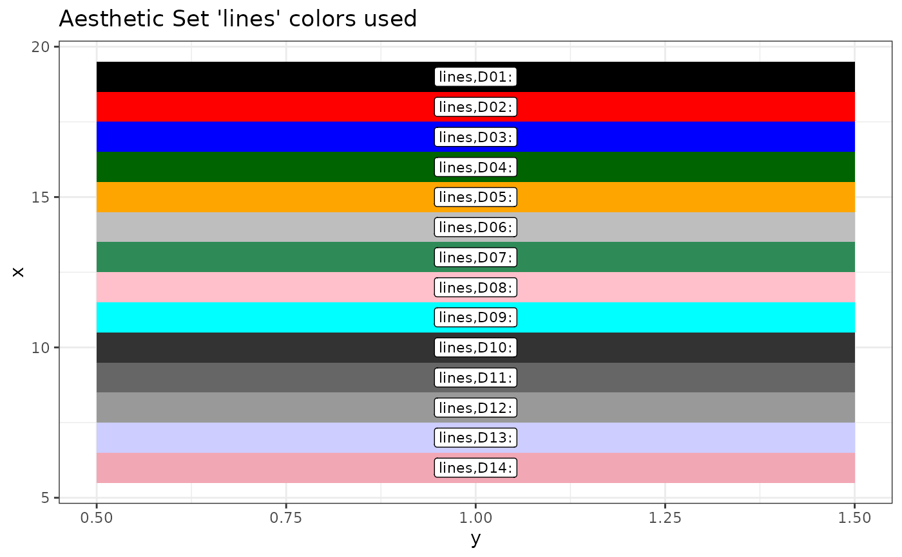

fg_get_aes() gets aethestic data.frame for use in graphs.
fg_get_aesstring() takes a column from the data.frame retrieved by fg_get_aes()
fg_print_aes_list() prints names of aesthetics used internally in FinanceGraph functions.
fg_display_colors() Shows a plot with current colors.
Usage
fg_get_aes(item = "", n_max = NA_integer_, asdataframe = FALSE)
fg_get_aesstring(
item = "",
n_max = NA_integer_,
toget = "value",
rtnifnotfound = FALSE
)
fg_display_colors(item = "")
fg_print_aes_list(grepstr = "")Arguments
- item
(Default: "") A grep string for categories desired.
- n_max
Maximum number of rows or entries to return. Required for
Rcolorbrewercolor aesthetics- asdataframe
(Default: FALSE) Return dataframe of parameters regardless of type. (See details)
- toget
Column in the aes
data.frameto paste together as a string.- rtnifnotfound
Return
NA_character_if aes not found- grepstr
narrow list of internal aesthetics sets to functions from
grepstr
Value
fg_get_aes() returns data.frame of aesthetics, including sorting columns, help strings, and values,
fg_get_aesstring() returns a list with just the character values of the requested aesthetic.
fg_print_aes_list() returns a markdown ready character vector of aesthetic names used in each function
fg_display_colors() returns a ggplot2::ggplot() object with colors and associated names for an aesthetic name
Examples
# Data set, String
head(fg_get_aes("lines"),3)
#> category variable type value const used helpstr
#> <char> <char> <char> <char> <char> <char> <char>
#> 1: lines D01 color black all Low cardinality line colors
#> 2: lines D02 color red all Low cardinality line colors
#> 3: lines D03 color blue all Low cardinality line colors
fg_get_aesstring("lines")
#> [1] "black" "red" "blue" "darkgreen" "orange" "gray"
#> [7] "seagreen" "pink" "cyan" "grey20" "grey40" "grey60"
#> [13] "#cdcdff" "#f2a7b5"
# Gradient colors are stored in a `data.frame` as in a set of "Blue Greens"
fg_get_aes("espath_gp",asdataframe=TRUE)
#> category variable type value const used
#> <char> <char> <char> <char> <char> <char>
#> 1: espath_gp colorrange seq,BuGn 7 fg_eventStudy
#> helpstr
#> <char>
#> 1: Brewer colors if used
# To get the actual colors, we need to know how many:
fg_get_aes("espath_gp",n_max=8)
#> category variable type value const
#> <char> <char> <char> <char> <char>
#> 1: espath_gp C1 color #005824 <NA>
#> 2: espath_gp C2 color #137235 <NA>
#> 3: espath_gp C3 color #248C46 <NA>
#> 4: espath_gp C4 color #349E5F <NA>
#> 5: espath_gp C5 color #43AF79 <NA>
#> 6: espath_gp C6 color #57B990 <NA>
#> 7: espath_gp C7 color #6BC4A7 <NA>
#> 8: espath_gp C8 color #85CFBA <NA>
fg_display_colors("lines")
